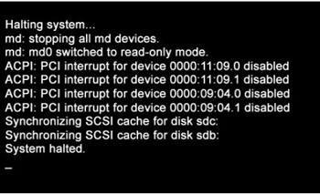

Operating Documentation
Direction 5193574-800, Rev# 22
Module Version 6.0, Version Date 2/1/12
Operating Documentation |
| Condition | Reference | Effectivity |
|---|---|---|
All hardware components of the System must be functional. | - | - |
The Operator Console Front Cover will need to be removed to gain access to the Host Computer DVD Drive. | - | - |
A valid and current System State Backup is required. System State is already configured for site specific configuration and preferences. If System State Backup media is missing or not current, some or all of the following must be performed: (1.) A manual configuration using information contained on the System Configuration Data Sheet completed at installation time. (2.) Software Options Licences will need to be manually reloaded. (3.) System Calibrations will need to be performed. | - | - |
Only trained service personnel should service the GE CT Scanner. | - | - |
CTT Operating System, Version 5.3.11
CT Applications Software
Confirm that a current System State Backup Media is on site. If unsure of the status of the System State, execute System State Save Restore procedure found in the Software Chapter of this manual. Save a System State Backup to either DVD-RAM or USB Media.
Remove all media from DVD Peripheral Towers before starting the OS Load of the LFC process.
Unplug the Hospital Network (HSP) cable from rear Console bulkhead.
Remove the Operator Console front cover per the prescribed procedure Console Cover Removal and Installation.
Insert the OS Disk into the Host Computer DVD Drive. See the following illustrations.
Shutdown and Power Cycle Operator Console (wait approximately 10 seconds for cycle power)
Illustration 1: Monitor Display - System Halted

As the Host Computer restarts, the boot process messages appear. After the booting process completes the boot: prompt appears.
At the “boot:” prompt, type the following:
After the OS is loaded on the Host Computer, the Complete Window appears.
Remove the OS Disk from the Host Computer DVD drive when it ejects and close the tray. Press [Enter] to Reboot.
The Host Computer begins to reboot.
Open the tray on the Host Computer DVD Drive.
Insert the Applications Disk into the DVD Drive and close the tray.
Select [Run Command] in the Warning box.
Select [Load] in the CT Software Installation window.
System State decision for Install INFO decision box will appear.
System State (Install INFO) Media Type decision window will appear
Insert the System State Backup Media (DVD-RAM or USB).
The Install INFO on the System State Backup Media will be read and if a valid System State Backup has been inserted, an LightSpeed/INFO window will become active.
The Install INFO on the System State Backup Media will be displayed and a confirmation window will appear.
System Install INFO will be now used to create the CT Application load routine. Do not remove the Apps Disk until completed.
When completed, the Operator Console will automatically reboot.
After the Host Computer reboots, a pop-up window will appear
Illustration 15: CT Software Auto-Start Disabled Pop-Up Windows

To launch LFC Menu, open a Terminal Window, and log on as root:
Type: {ctuser@hostname} su -[ENTER]
Type the root password and press [ENTER]
Type: [root@hostname] /usr/g/scripts/LFC/startLfcMenu.sh[ENTER]
A window will be displayed showing the LFC Menu.
Select Set Date and Time (Menu Selection # 1)
Select Install ClassC (Menu Selection # 2)
Select Install ClassM (Menu Selection # 3)
Select Restore System State (Menu Selection # 4)
Optional Menu Selections
Select Quit (Menu Selection # 8)
Reboot the System
Perform the Tube Install Certification procedure.
When completed, continue with Flash Download.
Perform the Flash Download Utility found on the Common Service Desktop - Utilities Tab, select [Flash Download].
When the Flash Download Window opens,
Once the Gantry Hardware Flash Downloads successfully, select [Dismiss].
Close the Common Service Desktop.
Reconnect the Hospital Network cable at the rear of the Operator Console that was disconnected at the beginning of the LFC.
Select Shutdown icon on the Desktop and restart the system.
Perform the System State Save and Restore procedure and save a System State Backup to either DVD-RAM or USB Media.
Save the System State Backup media in a safe and secure location for future service activity.
If applicable, install any Service Pack updates related to this release.
Refer to System Scanning Tests in the Functional Checks chapter of this manual to confirm proper operation.
Reinstall Console Front Cover.